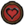
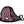

Ведмідь-борсук
“Если я искала проблемы, то я их нашла.”
Ведмідь-борсук (Bearger) - сезонний бос, доданий в Don't Starve: Reign of Giants. З'являється лише під час осені.
Представляє одного з чотирьох гігантів одиночної версії гри. Особливістю ведмедя-борсука є любов до їжі, особливо меду.
З'ява
Ведмідь-борсук приходить до персонажа на десятий день осені за стандартних налаштувань світу. Гігант не може прийти в жодний інший сезон. Його появі передує протяжний рик, який триває хвилину. Після закінчення запобіжних звуків бос з'являється у радіусі двох екранів від персонажа. Насамперед метою ведмедя-борсука є їжа. У її пошуках він вибиває речі із скринь та холодильників. Знаходячи їжу, бос поїдає її і вирушає на пошуки нової. Мед впливає нею інакше: після поїдання десяти одиниць меду гігант засинає. Заради нього бос руйнує дикі та побудовані гравцем вулики. Якщо бос не був убитий до настання зими, він пропаде в перший її день.
Бій
Після атаки персонажа ведмідь-борсук вступає з ним у бій. Бос має дві атаки та застосовує їх по черзі. Якщо персонаж тікає, гігант вирушає у погоню своїм широким кроком. Якщо гравець занадто сильно віддаляється від ведмедя-барсука, той переходить на біг і наздоганяє персонажа, проводячи свою другу атаку по площі. Своїми кроками бос руйнує структури, зрубує дерева і розламує валуни, що можна використовувати для отримання вигоди. Першою атакою гіганта є удар однією лапою, що завдає 100 одиниць шкоди персонажу і 200 шкоди іншим істотам, а також вибиває зброю з рук. Ця атака повторюється кожні 3 секунди, що дозволяє зробити три удари та відбігти перед наступною атакою боса. Саме такою атакою ведмідь-борсук вибиває речі із скринь і руйнує вулики. Під час бою, після трьох повторень атаки лапою, бос проводить позачергову атаку — він ударяє обома лапами об землю, завдаючи шкоди всьому навколо певному радіусі. Такий удар здатний не тільки руйнувати структури, а й викорчовувати із землі пні та кущі, за винятком очерету.
Don't Starve Together
У мультиплеєрі бос має особливість - він не йде зі світу з настанням зими, а засинає. Якщо атакувати ведмедя-барсука під час сплячки, він піднімається і позіхає, чим присипляє всіх істот в окрузі, а потім атакує істоту, що потривожила його. Якщо не встигнути вийти з радіусу дії позіхання, можна потрапити в нескінченний цикл засинання від позіхань і пробудження від босових атак. Після смерті ведмідь-борсук залишає на землі вісім одиниць м'яса, товсту шкуру та ескіз своєї фігури в Don't Starve Together. Якщо у світі активні місячні розлами, то після смерті ведмедя-борсука його тіло не зникне. З'явиться гештальт світлоцвіту, який вселиться в труп, тим самим воскрешаючи ведмедя у формі броньованого ведмедя-борсука, посиленої версії звичайного. Цього можна уникнути, якщо підпалити труп.
Різне
- Ведмідь-барсук було додано з оновленням "Giant Steps".
- Його вид — Megatherioceras Polyphemus (судячи, наприклад, по реплікам Уікерботтом). Тим не менш, єдиний схожий за назвою таксон — вимерлий рід Therioceras надряду Наутилоїдеї.
- У відео оновлення "Long Live The Queen" на долю секунди можна побачити той самий око.
- Судячи з репліки Максвелла про око циклопа циклоп-олені короткозорі.
- Вурт говорить про циклоп-оленя у жіночому роді. Також опис скіна "Скляний глазотик" циклоп-олень жіночого роду. Можливо мається на увазі, що деякі особини самки.
- Було додано в Terraria в рамках оновлення-кросовера "An Eye for An Eye".
- Під час бою з циклопом у Terraria також викликаються тіньові руки, що б'ються на боці боса.
- Існує офіційна плюшева іграшка циклоп-оленя, яку можна купити тут.
- Здоров'я 3000  6000

- Урон Игроку 100
Мобам 200 - Рассудок Во время боя -400/мин
В другом случае -100/мин
- Швидкість атаки 3
4 - Дистанція атаки 6
- Швидкість пересування 3
6 - Видобуток  x8
- Don't Starve Together
- Видобуток x10